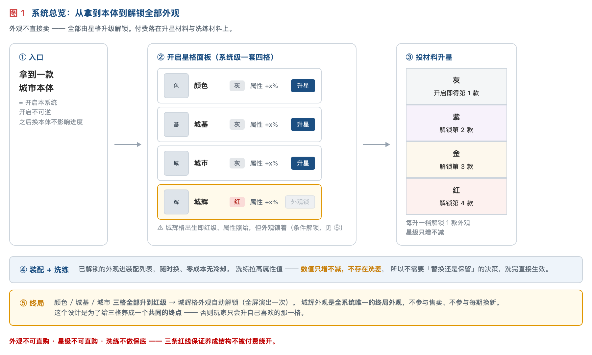
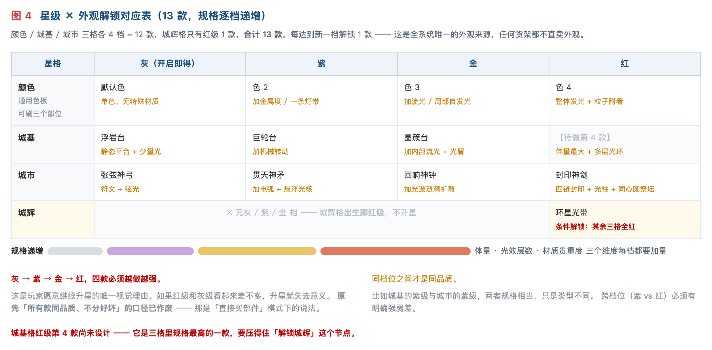
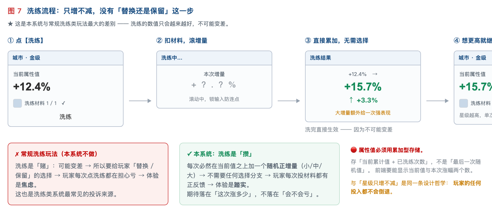
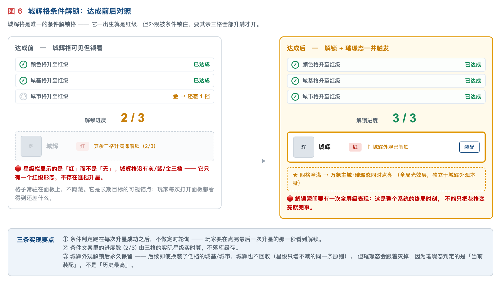
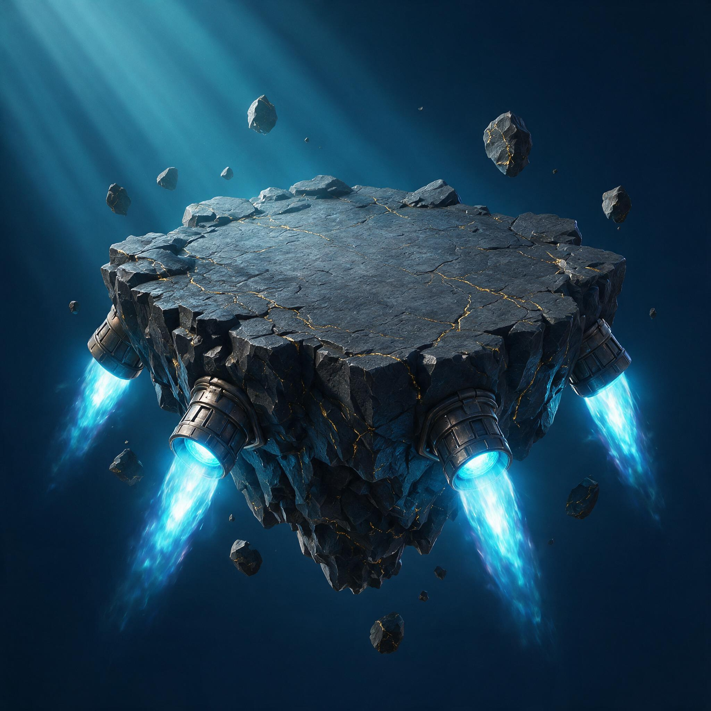
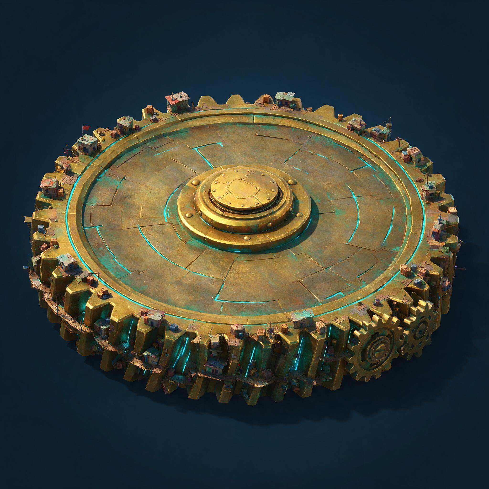
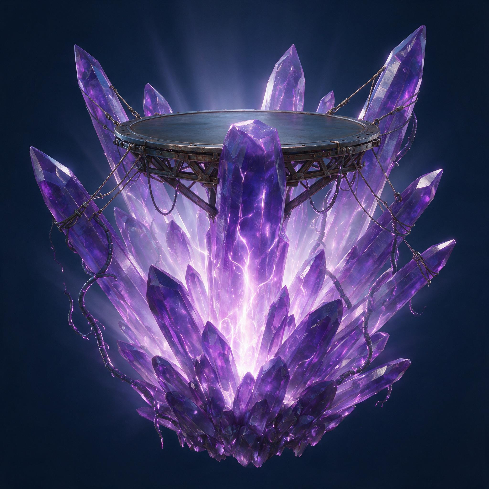
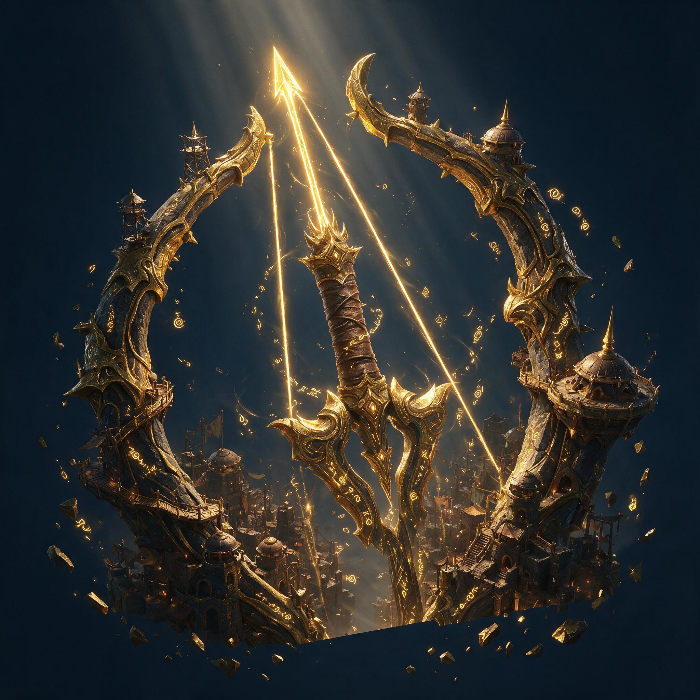
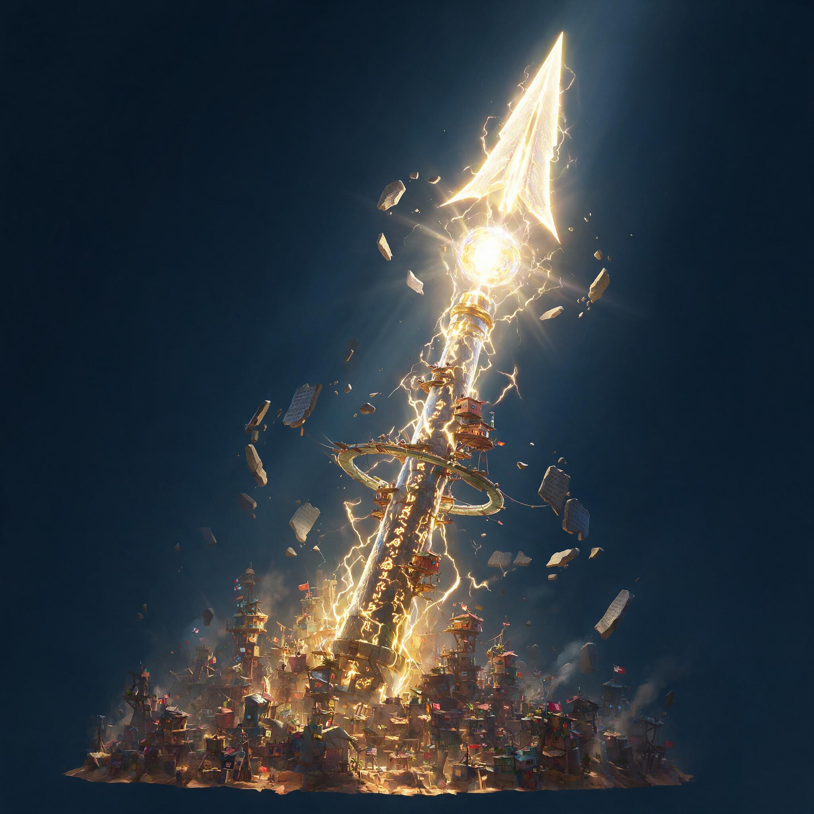
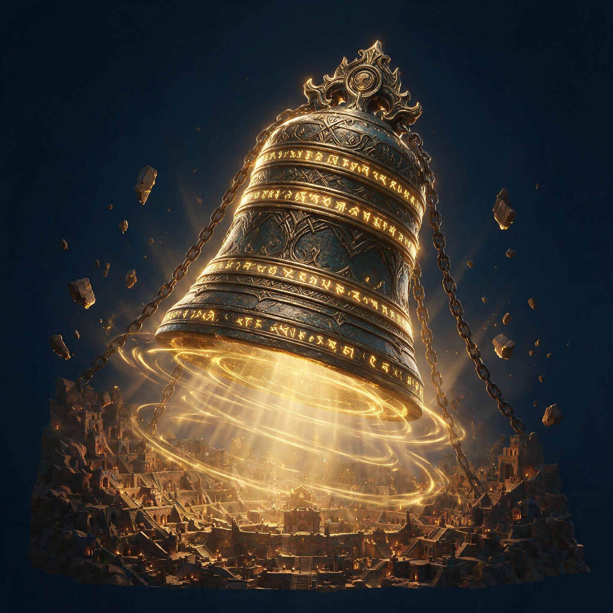

- 00 先用大白话讲一遍（UX / 开发 / 美术先看这节）
- 01 这是什么
- 02 为什么做
- 03 系统规则
- 04 首期内容设计
- 05 美需
- 06 付费结构
- 07 发放货架
- 08 开发要做什么
- 09 要拍板的
- 10 每期换档怎么跑
00先用大白话讲一遍
每个部分都有一个进度条（我们叫「星格」），一共 4 条。
往进度条里投材料 → 进度条升一级 → 白送这个部分的一款新样子。
4 条进度条都拉满 → 整座城点亮一个最终特效，通关。
0.1 拿买衣服打个比方
过去我们卖主城，像卖成衣：这一期出一套衣服，你花钱买下来，穿上，完事。下一期出新的一套， 旧的那套就不穿了 —— 你花的钱只在那一期有意义。
这次改成卖健身卡：衣服不卖了，改成「你练到什么水平，就自动获得对应的一身衣服」。 你花钱买的是训练材料，不是衣服本身。练得越久，衣柜里的衣服越多，而且一件都不会被收走。
0.2 四条进度条各管什么
| 进度条 | 管什么 | 升级后给什么 | 大白话 |
|---|---|---|---|
| 颜色 | 整座城的配色 | 一个新颜色 | 最便宜、最先练。新解锁的颜色，底座、城本体、光环三个部分都能刷，而且以后新出的样子也能刷 |
| 底座 | 城站在什么上面 | 一款新底座 | 城的下半段。首期四款：浮空的岩台 / 平放的大齿轮 / 长出来的水晶 / 三层旋转的符文环 |
| 城本体 ★ | 城是什么 | 一款新城本体 | 城的上半段，也是玩家最在意的那一眼。首期四款都是「神器」：弓 / 矛 / 钟 / 剑 |
| 光环 | 绕着整座城转的特效 | 唯一那款光环 | 不能靠投材料升。前三条进度条全部拉满，它才自动开 —— 这是整个系统的通关奖励 |
0.3 玩家实际会做的操作，一共只有三个
| 操作 | 花什么 | 得到什么 | 要注意的 |
|---|---|---|---|
| 升星 | 升星材料 | 进度条 +1 级，立刻白送这一级对应的那款样子 | 一共只能升 9 次（3 条进度条 × 3 次）。升星不加战斗力 |
| 洗练 | 洗练材料 | 这条进度条的战斗力数字变大 | 次数不限，而且每次必涨、绝不会变小 —— 所以不需要问玩家「要不要换」 |
| 装配 | 不花钱 | 换上已经解锁的任意一款样子 / 任意颜色 | 随便换、随时换、换回来也行。零成本、无冷却 |
0.4 三条最容易搞错的，先说清
① 「升星」和「洗练」是两回事，互不影响。
升星 = 换样子（解锁新外观），洗练 = 换数字（提高战斗力）。
升星不会让数字变大，洗练不会让等级变高。UI 上这两个数必须分开显示，不能合并成一个。
② 洗练永远不会变差，所以界面上没有「保留 / 替换」这个弹窗。
别的游戏洗练是赌（可能洗差了），所以要问玩家一句「留旧的还是换新的」。我们这里不问 ——
洗完直接生效，因为不可能变差。如果 UI 里出现了这个弹窗，就是做错了。
③ 玩家的进度永远不会倒退。
不降级、不洗差、样子不回收、材料跨活动不清零。任何「到期清零 / 赛季重置」的设计都不要做。
0.5 一句话版本
往下 §01-§10 是同一套规则的完整版本，含判定条件、状态穷举、货架与数值骨架。
交互图（10 张，横屏线框）在开发需求表 J_万象主城 的「开发需求」页签里，
UX 直接照那 10 张图做即可。
01这是什么

| 星格 | 管什么外观 | 档位 | 说明 |
|---|---|---|---|
| 颜色 | 通用色板 | 灰紫金红 | 最先开、最便宜。开出的每个颜色能刷城基 / 城市 / 城辉全部三个部位、全部款式 |
| 城基 | 城基款式 | 灰紫金红 | 这座城站在什么上面 —— 体量、轮廓基调、占地 |
| 城市 ★ | 本体款式 | 灰紫金红 | 主力付费格。这座城是什么 —— 题材、叙事、辨识度。主城和世界地图上第一眼看到的是它 |
| 城辉 | 环绕特效层 | 只有红 | 条件解锁：出生即红级，但外观锁着 —— 其余三格全部升到红级才开。全系统唯一的终局外观 |
三条基础口径
① 外观只能升星解锁，任何货架不得直卖。付费落在升星材料与洗练材料上， 不落在「买一个皮肤」。这是本案与现有主城套装最根本的差别。
② 星级只增不减，洗练只增不减。玩家的任何投入都不会倒退 —— 不降星、不洗差、不回收外观、跨期不清零。这是他愿意长期投的前提。
③ 同档同品质，跨档必须递增。城基的紫级与本体的紫级规格相当； 但同一格里灰 → 紫 → 金 → 红必须越做越强（体量 / 光效层数 / 材质贵重度三个维度逐档加量）—— 这是玩家愿意继续升星的唯一视觉理由。上一版「所有款同品质、不分好坏」的口径已作废。
装配槽固定 3 个（城基 1 + 本体 1 + 城辉 1），装配本身零成本、无冷却， 已解锁的款随时换回来。槽位不是付费点 —— 付费点是「解锁到第几款」。
02为什么做
数据源：1312 city_skin / 1388 city_suit_module / 1389 city_suit 三表逐行实测。
| # | 现在的问题 | 实测依据 | 后果 |
|---|---|---|---|
| ① | 集齐即终点 | 7 套主城套装全是「2 皮肤 + 2 挂件 + 1 特效 = 5 件 → 送最终形态」，无一例外 | 一期最多 5 个可售单位，第 6 次付费无处可去 |
| ② | 玩家零选择权 | 1389 的 A_ARR_items 是策划填死的固定 id 数组 |
只有「集齐 / 没集齐」两种状态，「我的主城」不成立 |
| ③ | 换新即弃旧 | 1312 共 124 张皮肤，同时只能穿 1 张；套装之间无跨期互通 | 旧付费随新内容上线归零，玩家知道这事，反过来压当期购买 |
| ④ | 换色引擎闲置 | A_INT_dyeing_skin 已上线，2024 圣诞做到过「一皮四色」，但2026 全年新增 0 行 |
一整个维度没进投放 |
03系统规则
3.1 四个星格
全系统只有一套四个星格：颜色 / 城基 / 城市 / 城辉。不是每款本体各带一套 —— 换本体不影响星格进度。
每个星格上有两条独立的东西：星级（灰 / 紫 / 金 / 红，决定解锁到第几款外观） 和属性值（战斗加成，可洗练）。两者互不影响 —— 升星不涨属性值，洗练不涨星级。
| 星格 | 属性类型 | 为什么给这一类 |
|---|---|---|
| 颜色 | 资源产量 | 最先开的格，给最没门槛的收益，让 0 氪也愿意点第一次升星 |
| 城基 | 建筑速度 | 「城站在什么上面」对应基建向属性，语义自洽 |
| 城市 | 部队攻击 | 付费主力格，给最被在意的战斗属性 |
| 城辉 | 全局加成 | 终局格，给一条小幅但覆盖面最广的加成 |
属性类型一经上线不再变更 —— 玩家会按属性类型规划升星顺序，改类型等于毁掉已做的规划。

3.2 升星与外观解锁
消耗升星材料把某个星格提升一档 → 立即解锁该档对应的 1 款外观，直接进装配列表可立刻穿上。
颜色 / 城基 / 城市 三格可并行升，不互为前置。引导上从颜色格开始（它最便宜， 且开出的颜色立刻作用于全部三个部位，第一次升星的正反馈最强），但规则不锁死顺序。
| 星格 | 灰（开启即得） | 紫 | 金 | 红 |
|---|---|---|---|---|
| 颜色 | 色 1 单色 | 色 2 加金属度 | 色 3 加流光 | 色 4 整体发光 + 粒子 |
| 城基 | B1 浮岩台 | B2 巨轮台 | B3 晶簇台 | B4 环轨神座 |
| 城市 | C1 张弦神弓 | C2 贯天神矛 | C3 回响神钟 | C4 封印神剑 |
| 城辉 | 没有灰 / 紫 / 金档 | A1 环星光带（条件解锁） | ||
三格各 4 款 + 城辉 1 款 = 13 款外观。全系统只有 9 次升星消耗机会
（3 格 × 3 次），所以升星材料是有限池，每期产出必须可控。
档位排序不是按「哪款好看」排的，是按规格上限排的：弓 / 矛 / 钟 / 剑四款的封印语言强度依次递增，
剑那款带四条巨链 + 贯地光柱 + 同心圆祭坛，是四款里体量与光效最重的，所以放红级。

3.3 洗练：只增不减
洗练只作用于属性值，不改星级、不影响已解锁的外观。每次洗练必然在当前值之上加一个 随机正增量（小 / 中 / 大三档），永远为正。
所以本系统没有「替换还是保留」这一步
常规洗练是「赌」：可能变差 → 所以要给玩家反悔的机会 → 玩家每次点洗练都在担心亏 → 体验是焦虑。这也是洗练类系统最常见的投诉来源。
本系统是「攒」：只会变好 → 不需要任何选择分支 → 每次投材料都有正反馈 → 体验是踏实。玩家的期待落在「这次涨多少」，不落在「会不会亏」。
与「星级只增不减」是同一条设计哲学 —— 玩家的任何投入都不会倒退。
由此产生的开发要求：属性值必须是累加型存储（存当前累计值 + 已洗练次数），
不是「存最后一次随机值」的替换型。
星级越高，单次增量的区间越大（期望值约 1.6 倍 / 档）。这是升星的第二重收益 —— 升星不直接给属性值，但把每次洗练的产出抬高，所以「先升星再狂洗」是最优策略，这正是我们想要的顺序。
洗练次数无上限，是长期消耗的主池（无限池）。 数值安全靠「属性值 → 实际加成」走对数型递减 + 硬上限收口，不靠限制次数 —— 详见数值结构页第七章。

3.4 通用色板
色板是全系统一套，不绑定任何一款外观。颜色格每升一档解锁 1 个颜色（首期共 4 色）， 解锁后立刻能用在城基 / 城市 / 城辉的任意款式上，包括以后每期新出的款。
三个部位各自选色：可以统一同色，也可以各选不同色。选色作用于「部位」而不是「款式」—— 换了款式，颜色保留。
⚠ 上一版「每款部件各自带 1-2 个购买配色」的口径已作废。那一版里同一个紫色在城基 A 上是一个 SKU、
在城基 B 上又是另一个，玩家换款式颜色不跟过去、要重新买；色板的价值被款数除掉了。
改成通用之后，色板的价值随外观款数线性放大 —— 新增 1 色 = 所有已有款式都多一种呈现。
配色是玩家唯一完全免费的自我表达位：切色零成本、无冷却、不消耗材料，已解锁的颜色永久可用。
3.5 城辉条件解锁 + 璀璨态
城辉格是唯一的条件解锁格。它星级出生即为红级（不需要也不能升星），属性值按红级给、可以洗练， 但外观锁着 —— 解锁条件 = 颜色 / 城基 / 城市 三格全部升到红级。
条件达成瞬间自动解锁，不需要玩家再点确认；解锁时全屏演出一次， 同时点亮 万象主城·璀璨态（全局光效层，独立于城辉外观本身）。

| 口径 | 规则 |
|---|---|
| 判定时机 | 跑在每次升星成功之后，不做定时轮询 —— 玩家要在点完最后一次升星的那一秒看到解锁 |
| 进度显示 | 灰态下也要写清条件文案，且带实时进度 (2/3)，不能只写「条件未达成」 |
| 格子可见性 | 常驻可见但置灰，不隐藏 —— 它是长期目标的可视锚点 |
| 解锁后 | 城辉外观永久保留，换装低档城基 / 城市 也不回收 （星级只增不减的同一条原则）。但璀璨态会跟着灭掉 —— 璀璨态判定的是「当前装配」，不是「历史最高」 |
解锁瞬间要有一次全屏级表现：这是整个系统的终局时刻，不能只把灰格变亮就完事。
达成过的期次永久记在铭牌上（如「四周年·璀璨」），后续期次不剥夺。
04首期内容设计
先看这张：每款对应哪个档位
| 星格 | 灰（开启即得） | 紫 | 金 | 红 |
|---|---|---|---|---|
| 颜色 | 色 1 玄岩灰 | 色 2 霜紫 | 色 3 熔橙钛灰 | 色 4 黑金帝威 |
| 城基 | B1 浮岩台 | B2 巨轮台 | B3 晶簇台 | B4 环轨神座 |
| 城市 | C1 张弦神弓 | C2 贯天神矛 | C3 回响神钟 | C4 封印神剑 |
| 城辉 | 没有灰 / 紫 / 金档 | A1 环星光带（条件解锁） | ||
档位排序不是按「哪款好看」排的，是按规格上限排的。 三个加量维度每档都要往上走：体量（越高档越大、剪影越夸张）· 光效层数（从几处发光 → 整体发光 + 粒子 + 光柱 + 环绕）· 材质贵重度（石 / 锈铁 → 鎏金 / 光铸 / 水晶）。
4.1 城基 4 款 —— 四种托举方式（顶面一律留空，中心不许有凸起）

B1 浮岩台
造型破碎岩台悬浮在空中，底面参差像从山体掰下来的。底部四角各一个能量喷口向下喷推力流，周围空气有热浪扰动。四周若干碎石绕着主体缓慢浮动。顶面整块削平、留净空。
颜色深灰玄武岩 + 金色矿脉（少量）+ 青蓝推力光。
动态碎石绕行、喷口推力流脉动、岩台极轻微上下起伏。
本档规格全套里最克制的一款。光只出现在四个喷口，不做整体发光、不做粒子场 —— 它是玩家开系统就拿到的，要留出往上三档的加量空间。
避坑不做飞行器底盘；喷口不做火箭尾焰（要托举不要起飞）；碎石不要多到糊住轮廓。
文案浮岩台 —— 从山体掰下来的一块，靠推力托住整座城

B2 巨轮台
造型巨型齿轮平放当平台（不是立着的轮子），从高处斜俯看到它平整的圆形顶面，顶面完全留空。齿牙朝外水平伸出，小屋货箱栈道只卡在轮缘齿间。中心黄铜轴心带铆钉盖板，轮缘边有两三个咬合小齿轮。
颜色黄铜齿身 + 锈青氧化面 + 青色灯槽。⚠ 与 B1 的青蓝刻意拉开色相。
动态主轮极缓慢转（一圈很久）、小轮快些、咬合处金属火花；齿缝灯随转动进出阴影。
本档规格比灰级多一层「机械转动」。加齿缝灯随转动进出阴影、咬合火花两条光效线；材质从玄武岩升到黄铜。
避坑齿轮必须平放当地板（首轮出图画成立着的轮子，已重跑）；不做钟表机构；齿牙要有磨损缺口。
文案巨轮台 —— 一枚巨齿轮平躺下来，就是一片地

B3 晶簇台
造型一丛巨大晶簇从地面斜刺而出，几根最粗的晶柱顶端磨平、共同托起一块平台。晶体半透明、内部有流动光；晶柱之间架金属桁架和吊索把平台固定（人为加固的痕迹），平台边缘垂下藤蔓状能量导线把晶体的光引上去。
颜色冷紫晶体 + 深灰金属桁架 + 青白内光。⚠ 与 B1 青蓝、B2 黄铜刻意拉开色相，四款摆一起要一眼分清。
动态晶体内部光缓慢流动，光沿导线往上爬，晶体边缘偶尔迸小光屑。
本档规格加「内部自发光 + 光屑粒子」。材质升到半透明水晶（贵重度高于黄铜），光效从局部升到整体透光，多一层飘散粒子。
避坑不要做成宝石堆或水晶洞（那是收集品语言）；晶体不要太规整，要像自然生长；桁架是加固不是脚手架。
文案晶簇台 —— 晶体从地里长出，托住整座城

B4 环轨神座 ★本次新做
造型三层同心的光铸石环水平嵌套、层层反向旋转，最内层是最大的一块实心圆盘、它平整的顶面就是留空的平台。每一层环缘刻满流转金色符文。环与环的缝隙里悬浮着碎裂符文石板与光尘。底面正中一道青色光柱垂直贯入地面，落点处有涟漪。四周有整圈符文碎片绕行。
颜色深蓝光铸石 + 鎏金符文刻线 + 青色贯地光柱。⚠ 与前三款的色相全部拉开。
动态三层环反向匀速旋转（速度各不同、要看得出层次）· 符文沿环缘流动 · 光柱脉动并在地面荡出涟漪 · 碎片绕行。
本档规格全套城基里体量最大、光效层数最多的一款。它要压得住「三格升满 → 解锁城辉」这个终局节点，所以必须一眼就比金级的晶簇台更重：多层结构 + 贯地光柱 + 整圈绕行碎片 + 全环符文流光，四层光效全上。
避坑不做传送门 / 魔法阵地板（那是功能性 UI 语言）；三层环的转速要有差异，同速会看成一整块；顶面仍必须完全留空，不许在圆盘上加祭坛纹样。
文案环轨神座 —— 三重符文环反向而行，把城托在正中
4.2 城市本体 4 款 —— 首期主题＝神器（底面一律平切，★主力付费格）
四款的共同语言：光铸材质（不是钢铁）+ 表面流转金色符文 + 封印语言（锁链 / 光柱 / 悬浮石板） + 城围着它建成祭坛。封印语言是神性的来源，少了就退回「放大的兵器」。
四款的差别是姿态（张 / 贯 / 悬 / 插）与封印语言的条数 —— 后者正是档位递增的抓手：灰级只用 1 条、红级四条全上。

C1 张弦神弓
造型巨弓立起构成城的门户，弓臂刻满金色符文。弓弦是一道绷紧的光，一支光箭已上弦、箭尖指天。弓臂上建有塔楼和栈道，有人在上面活动。碎石绕弓浮动，光柱从弓握处升起。
颜色象牙白弓臂 + 黄铜缠绕件 + 金色弦光与箭光。
动态弦光呼吸式明暗、箭尖蓄光、符文流动、碎石绕行。
本档规格本体列里最克制的一款。封印语言只用「弦」这一条（绷紧的光），不加锁链、不加悬浮石板阵。光效两层（弦光 + 箭尖蓄光）。
避坑弦必须是光不是绳；箭不要发射（保持蓄势）；聚落上的小旗不要做成真实国旗（首轮出图已踩过一次）；只做弓 + 脚下平台，不做地基。
文案张弦神弓 —— 弦上那支箭，一直没有放出去

C2 贯天神矛
造型长矛斜贯而上直插天空，矛身缠绕活体闪电、刻流转符文。矛尖下方悬浮一颗炽白光核，不接触矛身。环形平台和住舱像聚落一样箍在矛身中段。碎裂石板绕矛旋转，电弧在矛身与城屋顶之间跳跃。
颜色银白矛身 + 暗铁环形平台 + 白紫电弧与炽白光核。
动态电弧持续跳跃、光核缓慢自转并微浮、符文流动、石板绕行。
本档规格比灰级多一层「悬浮光核 + 电弧」。封印语言用两条（悬浮光核 + 绕行石板），体量上比弓更高（贯穿到天）。光效三层。
避坑不做现实中的具体武器型号；电弧不要满屏（会糊掉矛身轮廓）；只做矛 + 中段平台，不做地基。
文案贯天神矛 —— 一矛捅穿了天，城就长在矛杆上

C3 回响神钟
造型巨钟悬浮在城上方不接触地面，钟体覆盖同心符文环。钟口有可见的光波涟漪一圈圈向外荡开。粗链从钟体垂下钉入城中，像城被系在钟上。城做成阶梯式听经平台，全部朝上面向钟。
颜色古铜钟体 + 暗铁垂链 + 金色涟漪波纹与钟内透光。
动态涟漪一圈圈匀速荡开（慢）、钟体极轻微摆动、符文环缓慢反向旋转。
本档规格加「整体悬浮 + 向外扩散的光波」。封印语言三条（垂链 + 同心符文环 + 涟漪）。整座钟离地悬浮是本档的体量升级点。光效四层。
避坑不做教堂钟或宗教符号；涟漪不要做成音符或声波图标；只做钟 + 垂链 + 听经平台，不做地基。
文案回响神钟 —— 钟不落地，城被它吊在下面

C4 封印神剑
造型光铸巨剑倒插入城心，剑身是光而非钢、刻满流转金色符文，剑格张开如一对羽翼。四条巨链从城的四角绷紧拉住剑身（封印感）。刻字石板悬浮并缓慢绕剑柄旋转。城建成同心圆环围着剑像一座祭坛，剑插入处升起一道光柱。
颜色金色光铸剑身 + 暗铁锁链与石板 + 符文流光与插入点光柱。
动态符文沿剑身流动、石板缓慢绕行、锁链轻微张紧震颤、光柱脉动。
本档规格本体列的顶配。封印语言四条全上（四条巨链 + 悬浮石板阵 + 贯地光柱 + 同心圆祭坛）。剑格张开如羽翼是剪影上最夸张的一款。光效五层。它与 B4 环轨神座是同一档，两款一起装配时要能互相压得住而不打架。
避坑不做钢铁质感的实体剑；符文不要满身贴（要有主次和流动方向）；只做剑 + 脚下祭坛环，不做地基和岛。
文案封印神剑 —— 四条链子拽着它，谁也不敢拔
4.3 城辉 1 款 —— 全系统唯一的终局外观（条件解锁）

A1 环星光带
表现一道光带从城体腰部升起、绕整座城水平铺开成一个略倾斜的环。 内层青色实心光带、外层裹一层金色细碎光尘，两层反向缓慢旋转。光带经过城体时从建筑背后穿过、正面转半透明。 城基周围持续有橙金余烬往上飘，飘到光带高度被卷进环里带走一圈再消散。
硬约束绝不允许盖住本体的识别轮廓 —— 光带必须从建筑背后穿过、正面转半透明。
本档规格玩家要把其余三格全升到红级才拿得到， 表现强度要配得上这个门槛，同时又不能糊掉底下那两件红级部件。这个平衡是本款最难的地方。
避坑不做土星环那样的宽扁盘；不满屏粒子（会糊掉城体）； 不闪频过快（主城是常驻界面会累眼）。
文案环星光带 —— 三格满了，城才配得上这道环
4.4 通用色板 4 个 —— 一套颜色刷三类部件

| 解锁档位 | 颜色名 | 色感（哪块换成什么） | 材质规格（本档加量） |
|---|---|---|---|
| 灰级 | 玄岩灰 | 冷灰石材 + 极少金色矿脉 | 单色，无特殊材质。不加金属度、不自发光 |
| 紫级 | 霜紫 | 冷紫主色 + 深灰构件 | 加金属度，多一条灯带 |
| 金级 | 熔橙钛灰 | 熔橙主色 + 冷灰钛金属 | 加流光，局部自发光 |
| 红级 | 黑金帝威 | 黑曜底 + 金纹刻线 | 整体发光 + 粒子附着（本档最贵重） |
每个颜色要出三套材质（城基用 / 本体用 / 城辉用），三套要看得出是同一个颜色 ——
但不是同一个色号：本体给主色、城基降明度、城辉提亮，三档明度关系由美术定一套规则后全色沿用。
⚠ 上一版的「城基 3×2 + 本体 4×1 = 10 个绑定款式的购买配色」已作废。
避坑：四个色的色相要两两拉开，不要出现「两个都偏暖金」；霓虹类只保留一条主霓虹线；
每个色都要在四款城基 + 四款本体上试贴一遍，不能有某个色在某款上糊成一坨。
05美需
颜色这块怎么给美术讲（每款都要讲到这四层）
| 层 | 要讲什么 | 例（B3 晶簇台） |
|---|---|---|
| 默认色名 | 四字色名，随部件一起获得、不单卖 | 霜紫 |
| 主色 + 辅色 + 光色 | 三段拆开写，不要只给一个笼统色 | 冷紫晶体（主）+ 深灰金属桁架（辅）+ 青白内光（光） |
| 与同组其它款的色相关系 | 同品质的几款摆一起要一眼分清，色相必须刻意拉开 | 与 B1 的青蓝、B2 的黄铜刻意拉开色相 |
| 可购色板的色感 | 每个色板一句话，说清「哪块换成什么」 | 翡翠夜光＝深绿晶体 + 荧绿内光 ｜ 赭石晨曦＝暖赭红 + 晨光金 |
⚠ 只写「深灰色调」这种笼统描述，美术只能猜。 主色管大面积、辅色管结构件、光色管发光部位，三段分开给，返工率会低很多。
四条通用硬约束（比单款造型重要，美术开工前必须先定）
万象主城是常驻系统，部件要跨期互相搭配：这期的本体要能装往期所有底座，这期的色板要能刷往期所有部件。 下面四条一旦定死就不能改 —— 事后改等于已产的全部部件重做。
- 底座顶面必须留净空区。三款底座的顶面挂载点坐标、朝向、可承载直径全项目一套值， 顶面中心不许有凸起结构（本体会插进去）。
- 本体底面必须平切。接口尺寸上限、重心位置、包围盒上限统一， 底部不要长出悬浮岛式的参差结构（首轮出图 AI 就长过，被驳回重出）。
- 材质槽命名必须统一。色板靠材质槽做批量替换（如
body_main / body_trim / glow_a）， 命名不统一就只能逐款手配，后续每期 8 个色板的产能直接卡死。 - 城辉不许遮挡本体的识别轮廓。本体是付费大头，特效盖住等于削弱玩家刚买的东西 —— 光带必须从建筑背后穿过、正面转半透明。
⚠ 这四条的具体数值请美术在首期开工前给出，配置与后续所有期都按这套值走。
5.1 每款要交付什么（给美术的清单）
下面是一款部件从美术侧交付的完整清单 —— 缺任何一项配置就落不了地。
| 交付项 | 城基 | 本体 | 城辉 | 色板 | 说明 / 落到哪张表 |
|---|---|---|---|---|---|
| 3D 模型 | ✓ 每款 1 套 | ✓ 每款 1 套 | — | — | 按 §5.2 的挂载点 / 平切规格；模型 key 登记进 1511 |
| 材质与贴图 | ✓ | ✓ | — | ✓ 每色 1 套 | 材质槽命名必须统一（body_main / body_trim / glow_a），色板按槽名整套替换 |
| 动态 / 特效 | ✓ 有动态的款 | ✓ 每款都要 | ✓ 主体就是特效 | — | 循环型（不是触发型）；城辉 prefab 路径登记进 1512 |
| 道具图标 | ✓ 每款 1 个 | ✓ 每款 1 个 | ✓ | ✓ 每色 1 个圆点 | 列表 / 商店 / 图鉴用；图标 key 登记进 1511。色板的是配色条上的圆形色点 |
| 槽位缩略图 | ✓ | ✓ | ✓ | — | 装配界面三个槽里显示的小图，比道具图标更小更简 |
| 图鉴卡面 | ✓ | ✓ | ✓ | ✓ | 图鉴四册的卡片图 + 未拥有时的暗色剪影版（剪影是购买动机，不能只给彩色版） |
| 璀璨态叠加光效 | 全系统 1 套（不按款出） | 三槽装满 + 当期城辉时叠加的全局光效 + 城池名特效 + 铭牌标记 | |||
首期合计要交付：8 套模型（4 城基 + 4 本体）+ 1 套城辉特效 + 12 套色板材质（4 色 × 3 类部件）+ 13 个道具图标（9 件 + 4 色点）+ 9 个星格缩略图 + 13 张图鉴卡面 × 2 态（彩色 + 剪影）+ 1 套璀璨态光效。
5.2 每款的避坑项（美需表里逐款展开，这里只列最容易踩的）
| 部件 | 避坑 |
|---|---|
| B1 浮岩台 | 不要做成飞行器底盘 · 喷口不要做成火箭尾焰（要「托举」不要「起飞」）· 碎石不要多到糊住轮廓 |
| B2 巨轮台 | 不要做成钟表机构（要重工业）· 齿牙要有磨损缺口 · 轴心与甲板要有「不随轮转」的分离感 |
| B3 晶簇台 | 不要做成宝石堆或水晶洞（那是收集品语言）· 晶体不要太规整 · 桁架是加固不是脚手架 |
| B4 环轨神座 | 不做传送门 / 魔法阵地板（那是功能性 UI 语言）· 三层环的转速要有差异，同速会看成一整块 · 顶面必须完全留空，不许在圆盘上加祭坛纹样 |
| C1 张弦神弓 | 弦必须是光不是绳 · 箭不要发射（保持蓄势）· 聚落上的小旗不要做成真实国旗（首轮已踩）· 只做弓 + 脚下平台 |
| C2 贯天神矛 | 不做现实中的具体武器型号 · 电弧不要满屏（会糊掉矛身轮廓）· 只做矛 + 中段平台 |
| C3 回响神钟 | 不做教堂钟或宗教符号 · 涟漪不要做成音符或声波图标 · 只做钟 + 垂链 + 听经平台 |
| C4 封印神剑 | 不做钢铁质感的实体剑 · 符文不要满身贴（要有主次和流动方向）· 只做剑 + 脚下祭坛环，不做地基和岛 |
| A1 环星光带 | 不要做成土星环那样的宽扁盘 · 不要满屏粒子（会糊掉城体）· 不要闪频过快 |
| 通用色板 | 四个色的色相要两两拉开，不要「两个都偏暖金」· 霓虹类只保留一条主霓虹线 · 每个色都要在 4 城基 + 4 本体上试贴一遍 |
一个题材冲突，提前说清
主城套装的循环档期是 3 月科技节和 11 月感恩节。科技节历年方向已用满 废土工具 / 废土工业 / 摩登都市 / 星际飞船 / 军事机甲，调性是科技；本案首期是神器 / 奇幻方向。
本案首期四款本体走的是神器方向（弓 / 矛 / 钟 / 剑）， 没有猿族元素，所以与科技节的去猿族化口径不冲突；但神器方向偏奇幻， 与科技节的科技调性也不搭。结论不变：档期上避开 3 月科技节。
万象主城是常驻系统、不是节日套装循环 —— 首期主题（神器）做中性不绑节日， 节日主题留给后续每期新增的那几款（每期换三格的外观池）。 所以美需没挂节日 tab，走「临时需求」那类独立 tab（主表已有先例：临时需求-世界杯装饰物）。
06付费结构
6.1 付费点
卖的是材料，不是外观。四个付费点，两条材料线。
| 编号 | 卖什么 | 玩家在什么情形下会买 | 货架 |
|---|---|---|---|
| P1 | 升星材料礼包 ★ | 卡在某一档升不上去，而下一档那款外观已经在图鉴里亮着轮廓 → 买材料补齐 | 节日 GACHA / 常驻商店 |
| P2 | 洗练材料礼包 | 属性值不满意想再洗几把 → 买材料。单价低、可反复买，是本系统的长尾复购 | 限时抢购 / 省省卡 |
| P3 | 首个城市本体 | 还没开启系统 → 拿第一款本体。必须同时给免费路径， 付费只做「更快拿到」 | 节日 GACHA |
| P4 | 当期综合礼包 | 想一次拿到当期的两种材料 + 当期道具 | 累充 / 签到 / BP 付费轨 |
升星材料是有限池（全系统只有 9 次消耗机会），手感是「攒够就有新外观」—— 确定性目标。洗练材料是无限池，手感是「随时可投、每投必涨」—— 无门槛消耗。 两种材料分开、不通用、不可互兑：合并成一种会让玩家陷入「这份材料该拿去升星还是洗练」的两难， 而这个选择没有正确答案，只会让人卡住不敢花。
6.2 付费深度从哪来
2 皮肤 + 3 挂件
4+4+1 件 + 4 通用色
洗练次数无上限
上一版按「可售单位数」算深度（首期 19 / 全年 87）。星格版不再用这个口径 ——
外观不卖了，深度改由两种材料的消耗总量承载。
这个改法把付费深度的天花板拆掉了：现在模式一期最多 5 个 SKU，第 6 次付费无处可去；
星格版的洗练是无限池，玩家想追多高都有地方投，而数值安全靠递减曲线 + 硬上限收口，不靠限制投入。
红线（定版，逐期不改）
- 外观不可直购 —— 任何货架不得直接出售「某一款外观」。外观只能由升星解锁， 否则整个养成结构失去意义。
- 星级不可直购 —— 可以卖材料，不能卖「直接 +1 星」。
- 洗练不做保底、不卖指定数值 —— 卖「洗到最高值」等于把属性明码标价，会引发数值军备。
- 城辉外观不参与任何售卖 —— 它是三格满级的唯一奖励。
- 装配槽永久 3 个，不随期数增加、不作为付费点。
- 材料跨期不清零，往期外观永不下架 —— 它是常驻养成线，清零等于让长期玩家的投入归零。
- 不设外观付费墙 —— 灰级那档（每格第 1 款）开启系统即得；免费产出必须能让零氪玩家持续升星，只是慢。
07发放货架
本系统不新建任何发放玩法。除 D1 外全部挂现有坑位，每期只换商品内容。 所有货架发的都是材料，没有一个货架发外观。
| 通路 | 货架 | 发什么 | 说明 |
|---|---|---|---|
| 付费 | |||
| D1 | 万象主城常驻商店 | 两种材料的常驻档位 | 唯一新建的货架；常驻在架，不随档期下架 |
| D2 | 节日 GACHA | 升星材料（主力）+ 首个本体 | 沿用现有 GACHA 坑位，只换奖池 |
| D3 | 累充（个人 / 服务器 / 联盟） | 两种材料的组合包 | 沿用现有三件套结构 |
| D4 | 限时抢购 / 省省卡 | 洗练材料（低单价高频位） | 长尾复购的主要落点 |
| D5 | 节日 BP 付费轨 | 升星材料大额档 | 档期内的集中投放位 |
| 免费（零氪闭环保底） | |||
| D6 | 签到 / 每日任务 | 每日少量洗练材料 | 零氪的日常正反馈 —— 洗练是无限池，天天能洗 |
| D7 | 节日 BP 免费轨 | 每期保底一定量升星材料 | 保证零氪每期都能推进星级，只是慢 |
| D8 | 活动积分兑换商店 | 两种材料的兑换位 | 把其他玩法的积分导进本系统 |
| D9 | 本系统专属排行榜 | 按名次给两种材料 | 给活跃玩家一条不花钱的加速道 |
| 存量接入 | |||
| D10 | 历史主城套装转译 | 7 套旧套装 → 一次性材料补偿 + 保留旧套装可穿 | 边界见 §09 第 3 条 |
7.1 各分层应该走到哪
| 分层 | 首期结束时应能达到 | 不应能达到 | 设计意图 |
|---|---|---|---|
| 零氪 | 三格里至少一格升到金级；解锁 6~8 款外观；洗练可持续做 | 三格全红（拿不到城辉） | 保证 0 氪能玩、能换样子、能看到升星反馈，终局外观留给付费 |
| 小额 | 三格全到金级；解锁 9~10 款 | 三格全红 | 让小额玩家看到城辉就在一步之外 —— 这是转化点 |
| 中氪 | 首期内三格全红 + 拿到城辉 | — | 城辉是中氪的终局目标，首期内可达 |
| 大 R | 三格全红 + 属性值洗到递减段后段 | — | 后续投入转为洗练长尾 |
免费材料与付费材料完全同一种道具 —— 不做「免费材料只能升到某档」这类限制。
区分靠速度不靠品质：零氪走得慢，但每一步都走得到。
⚠ 上表四行成立的前提是免费产出配额与付费货架档位配平 —— 这两组数是数值页的 ★ 待定版项。
08开发要做什么
⚠ 与上一版最大的差别：不再做 1389 槽位化改造。 外观来源从「玩家拥有的部件」变成了「星格解锁状态」，所以主项变成一套养成数据结构。
| 项 | 性质 | 说明 |
|---|---|---|
| 星格养成数据 | 新做（主项） | 4 格 × (当前星级 + 当前累计属性值 + 当前装配的外观 id) 三字段。 通用色板是系统级单值，不落在任何格里 |
| 升星与解锁链路 | 新做 | 扣材料 → 星级 +1 → 解锁该档外观 → 进装配列表。解锁状态按「星格 + 档位」推导， 还是每解锁一款写一条拥有记录，需开发定 |
| 洗练（累加型） | 新做 | 扣材料 → 随机正增量 → 累加到当前值。前端要能显示「当前值」与「本次涨了多少」两个数。 没有替换 / 保留分支 |
| 城辉条件解锁判定 | 新做（轻） | 每次升星成功后检查三格是否全红；达成则解锁城辉外观 + 点亮璀璨态，一次全屏演出 |
| 属性结算 | 改造 | 四格属性同时生效并叠加，走哪条现有属性链路需确认； 「属性值 → 实际加成」的递减曲线 + 硬上限也在这一层 |
| 通用色板 | 改造 | 现有 1312 A_INT_dyeing_skin 是「一个配色绑一款皮肤」，与通用色板不匹配 ——
要新建颜色表，还是改成「颜色 id × 部件 id」映射，需确认 |
| 装配与切换 | 已有 | 3 槽装配零成本无冷却，沿用现有主城外观切换逻辑 |
| 部件表结构 | 已有 | 1312 / 1388 / 1511 / 1512 沿用承载外观资源本身 |
| 发放货架 | 已有 | D2-D10 全挂现有坑位，仅 D1 常驻商店新建 |
8.1 需要开发先确认的六件事
- 星格数据存哪 —— 新建一张玩家养成表，还是挂在现有外观数据上。
- 外观解锁状态怎么表达 —— 按「星格 + 档位」推导，还是每解锁一款就写一条拥有记录。 这决定每期换档时外观池能不能换。
- 属性结算走哪条链路 —— 四格属性同时生效并叠加，且要能压硬上限。
- 通用色板怎么落表 —— 新建颜色表 or 改造
dyeing_skin。 同一颜色刷三种部件，材质槽命名必须三类统一。 - 装配状态能否同步给其他玩家客户端 —— 主城外观要在四个场景生效 （自己主城 / 世界地图 / 被侦查 / 联盟来访）。
- 世界地图大量主城同屏时城辉特效的降级策略 —— 如果世界地图一律不显示特效，城辉就只有自己能看到，终局奖励的分量减半。
09要拍板的
| # | 要定什么 | 不定的后果 | 我的建议 | 什么时候必须定 |
|---|---|---|---|---|
| 1 | 属性 buff 怎么算 | 洗练次数无上限 → 属性值理论上可以无限涨。不收口就是数值军备， 且城市格给的是部队攻击，会直接抬高全服攻击基线 | 属性值本身无上限，但「属性值 → 实际加成」走对数型递减曲线 + 硬上限 （前段近线性、后段极缓，洗到 100% 与 85% 的战力差可忽略）。城市格额外压硬上限并与现有战力体系对齐口径 | 首期配表前 |
| 2 | 挂载点规范什么时候定 | 底座顶面接口尺寸不统一 → 新本体装不上往期底座 → 「新件配旧件」这条立论直接不成立， 系统退化成一期一套。事后改等于已产部件全部重做 | 首期美术开工前定死，写进美需模板；换档流程固定一道闸门： 新本体 × 全部往期底座逐一试装，不通过不上线 | 美术开工前 |
| 3 | 老玩家那 7 套旧套装怎么接 | 不接的话，已买 7 套旧套装的老付费玩家在新系统里资产完全用不上，等于背刺 | 旧套装整套保留可穿（不进星格体系、不占星格档位），再给一次性升星材料补偿。 不做拆件混搭（旧模型没统一挂载点，拆开必然错位穿模）—— 这条边界要跟玩家讲清 | M1（评审通过后 2 周） |
| 4 | 四款本体的题材方向 | 四款本体已定为神器方向的四种姿态（张 / 贯 / 悬 / 插），且已按规格上限排出档位 （弓灰 / 矛紫 / 钟金 / 剑红）。若要改档位排序，四款的光效层数与体量都要重做 | 按现排序走 —— 剑那款带四条巨链 + 贯地光柱 + 同心圆祭坛，是四款里最重的，压红级最稳。 另需确认城基红级新做的 B4 环轨神座（三层反向旋转符文环 + 贯地光柱）。方向对比见 directions.html | 美术开工前 |
| 5 | 首期跟哪个档期上线 | 决定美术排期与美需 tab 归位；也决定首期外观池的题材是否要跟节日走 | 避开 3 月科技节（撞方向 + 去猿族化冲突，见 §05）。 题材已做中性，跟哪期上线都不违和，你定档期我改 tab 名 | 尽快（美术排期要用） |
10每期换档怎么跑
| 层 | 每期变 | 永久不变（= 开发一次） |
|---|---|---|
| 结构 / 规则 | 不变 | 四星格 · 四星级 · 升星与洗练规则 · 城辉条件解锁逻辑 · 通用色板 · 3 槽装配 · D1-D10 货架位 |
| 外观池 | 换三格的内容 （颜色 2 + 城基 3 + 城市 3） |
城辉外观不参与换档 —— 它是全系统唯一的终局外观 |
| 材料 | 不变，且跨期不清零 | 两种材料常驻，上期没花完的直接进本期 |
⚠ 换档方式需开发先定（见 §8.1 第 2 条）：是把新外观追加进原池（星级解锁位往后延）， 还是整池替换（星级不变但外观换脸）。这条不定，第二期做不了。
换档五步
- 美需 —— 按当期节日主题出新外观美需，必须标清每款对应哪个档位， 并按「灰 → 紫 → 金 → 红 规格逐档递增」给加量要求（这是与现有主城皮肤美需最大的差别）
- 美术批产 —— 模型 6 套（城基 3 + 本体 3）+ 通用色材质 6 套（2 色 × 3 类部件）
- 配表 —— 1312 新增城基 / 本体行、1388 新增行、1511 资源、1512 特效路径； 新外观挂到对应星格的对应档位
- 挂货架 —— D1 换常驻档位；D2-D5 换材料包内容； 核对 D6/D7 免费产出配额是否仍能让零氪推进星级
- 试装闸门 + 上线回归 —— 新本体 × 全部往期城基逐一试装； 上线后看升星漏斗（各档到达率）/ 洗练次数分布 / 三格全红达成率 / 两种材料的产销比
⚠ 第 5 步的试装工作量随期数增长（第 N 期要试装 N 组以上），不能省 —— 省掉的那一组就是玩家解锁了却装不上的那一组。
版本 v5.0（2026-08-20）星格版。机制定版改动：外观不再直接售卖，
改由四星格（颜色 / 城基 / 城市 / 城辉）× 四星级（灰紫金红）升星解锁，共 13 款；
洗练只增不减（无替换决策）；色板改为全系统通用一套；城辉为条件解锁终局外观。
本版一并作废了 v4.0 的五条旧口径（详见 §01 / §03.4 / §06.2 的作废标注）。
v3.0 重写版。v1.0 是 16 章模板案（论证套话过多，已归档
_archive_16chap.html）；v2 是一页纸（onepager.html，
30 秒版，留着给别人快速看）。本版以首期设计与美需为主体，砍掉核心循环 / 分层体验 / 立项论证 /
风险对策四章模板内容，只保留能直接拿去对齐的部分。
配套：开发需求表 J_万象主城（三页签 + 14 张横屏交互图）·
美需 新系统-万象主城（首期）